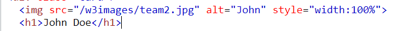

Dada esta regla CSS

- ¿Qué tipo de selector CSS es? Respuesta: Es un selector de...
idclase. - ¿Cuantas propiedades CSS establece este selector? Respuesta: 2
- ¿Cuál es el valor de la segunda propiedad? Respuesta: 18px
Analiza el siguiente tag img
- ¿Cuantos atributos tiene este tag? Respuesta: 3
- ¿Cuál es el valor del atributo src? Respuesta: /w3images/team2.jpg
- Imagina que tenemos la siguiente reglas CSS. ¿Crees que el tamaño de la imagen sería de 1000px? ¿Por
qué?

Respuesta: No, porque en la primera imagen vemos que el tag img tiene un estilo inline que nos dice que el width de la imagen deberia ser de un 100% y es lo que va a mandar ya que los inline styles tienen mas poder.
¿Cuál es el valor de la propiedad font-weight de este botón?
Respuesta: 400